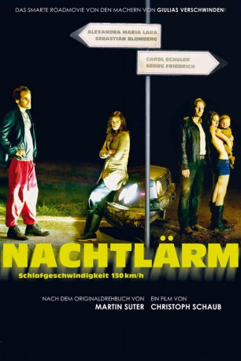

#5103 Nachtlärm
Alternativ: Lullaby Ride (Originaltitel)
 
 IMDB-Wertung: 5.6 / 10
IMDB-Wertung: 5.6 / 10  Metascore: 0
Metascore: 0 
Livia und Marco haben ein Problem: Es heißt Tim und ist 8 Monate alt. Die regelmäßigen nächtlichen Brüllattacken ihres Babys rauben den jungen Eltern seit Wochen den letzen Nerv. Nur die Fahrt im Familiengolf kann ihn beruhigen. Auf einer dieser Nachtfahrten passiert das Undenkliche: Der Golf wird geklaut - samt Baby. Die nun folgende Jagd nach Tim wird zu einer skurrilen Tour de Force für Eltern und Entführer - doch mit dem neuen Tag gibt es Hoffnung auf ein friedlicheres Leben für Livia, Marco und Tim.
Jahr: 2012
Dauer: 90 Minuten
FSK: 12
Land: Schweiz Studio: X Verleih AGTonspuren: DTS - ,
Untertitel:
Auflösung: 1080p (1920x1080) Größe: 5294 MB
Genre: Drama
Regisseur: Christoph Schaub
Drehbuch: Zach Braff
Soundtrack:
Darsteller:
 Alexandra Maria Lara als Livia
Alexandra Maria Lara als Livia Sebastian Blomberg als Marco
Sebastian Blomberg als Marco Georg Friedrich als Jorge
Georg Friedrich als Jorge- Michael Gempart als Zeuge
- Carol Schuler als Claire
- Andreas Matti als Wagenbesitzer
- Tiziano Jähde als Baby Tim
- Ingo Ospelt als Jeepfahrer
- Sylke Ferber als Frau im Auto
- Manfred Heinrich als Polizist 1
Datei: X:\2012(N-Z)\Nachtlärm (2012, FSK12, 1920x1080).mkv seit 23.12.2016
Festplatte: HD 2012(N-Z)-2013(A-H)
 Es gibt insgesamt 138 Filme in der Gruppe '2012(N-Z)'
Es gibt insgesamt 138 Filme in der Gruppe '2012(N-Z)'